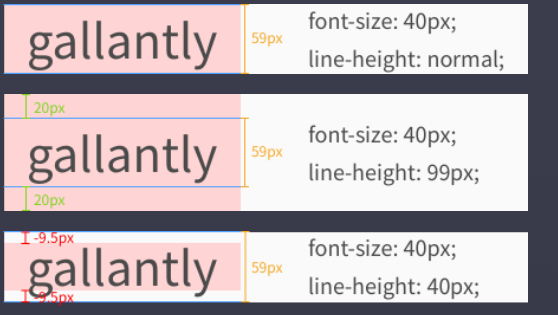

1em == 100%
2em == 200%
line-height : 콘텐츠 영역은
font-family 와 font-size에 따라 'content area'가 정해진다
line-height는 content area에 영향을 주지 않는다.
line-height를 통해 각 줄이 실질적으로 차지하는 공간을 정해줄 수 있다.
line-height를 99 px로 설정하면
content area보먀 40px가 많이 때문에 20px의 공간이 추가로 생긴다.
반대로 40px로 설정하면 content area보다 19px가 적기 때문에 위아래 -9.5px의 공간이 줄어든다.

serif : Times New Roman / 궁서체 -> 끝이 구부러짐
sans-serif : Arial / 굴림체 -> 깔끔한 디자인
Monospace : Courier / Courier New -> 모든 글자가 같은 넓이 차지
Cursive : Comic Sans MS / Monotype Coursiva -> 필기체
Fantasy : Impact / Maettenschweller -> 좀 특이한 나머지 글귀 포함
Cursive 나 Fantasy는 긴 글에서 사용시 지저분할 수 있어서
머릿말이나 짧은 글에 사용
font-family : "Times New Roman", Times, serif
띄어쓰기가 있는 것은 ""로 묶어두고 그 폰트가 없을 경우를 대비해
대체 가능한 폰트를 두 번째에 둘 수 있다.
마지막 대안으론 폰트 종류를 쓴다.
설치되어있는 serif 폰트중 아무거나 쓴다.
설치되어있지 않은 폰트 사용하기
google font 사용한다!
구글 폰트!select선택 -> Link태크를 head테그에 붙여 넣는다. 그러면 link를 붙인 페이지에서 사용가능하다.
이것처럼 사용하면 됩니다!